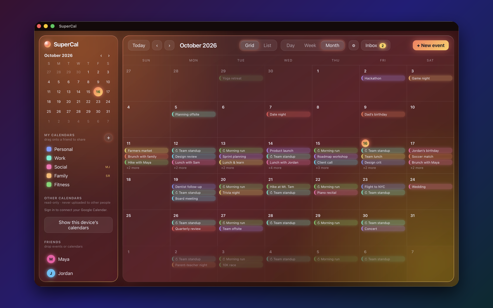

See the bigger picture
Move between month, week, day and list views to find the perspective that fits your plans.
Your days, your people, all in view. SuperCal brings personal plans and shared calendars together, wherever you like to plan.
Apple store availability varies by release status and region. If the listing is not available yet, please check back.

Move between month, week, day and list views to find the perspective that fits your plans.
Invite friends to events and share whole calendars with SuperCal Plus.
Keep your calendar comfortable with themes and appearance options. Extra customization is available with Plus.
Connecting Google Calendar is optional. SuperCal requests read-only access so you can see your Google calendars and events inside the app. It does not create, edit or delete your Google events. Disconnect whenever you choose.
Read our privacy policy for details about account information, calendar access and subscriptions.